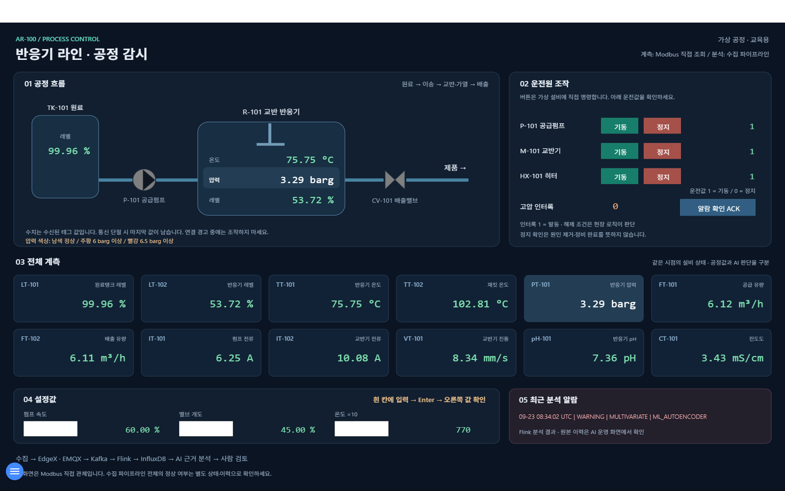
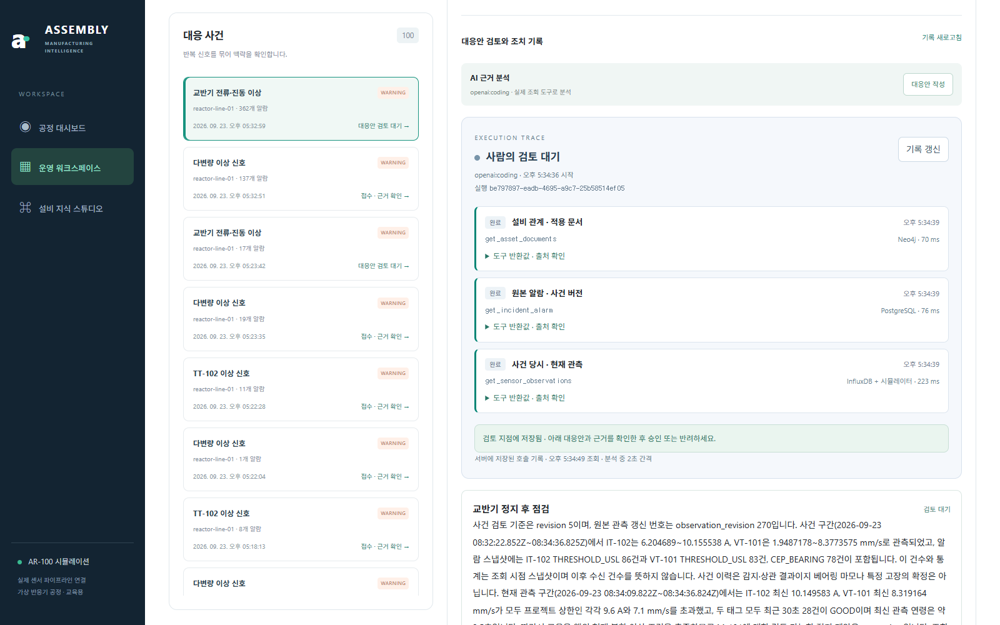
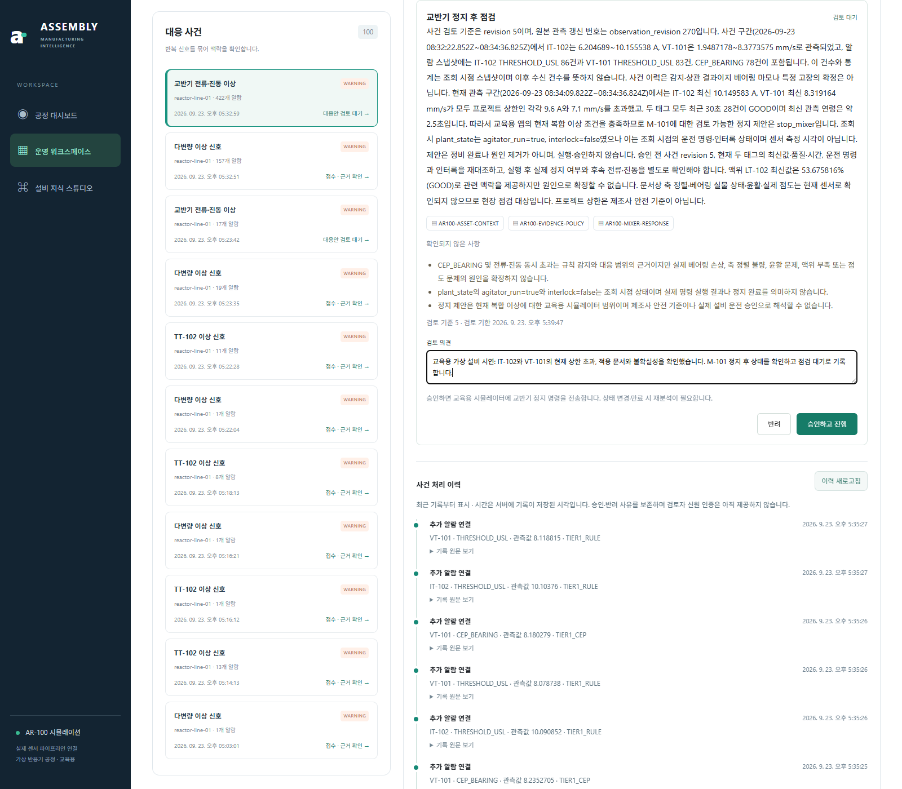
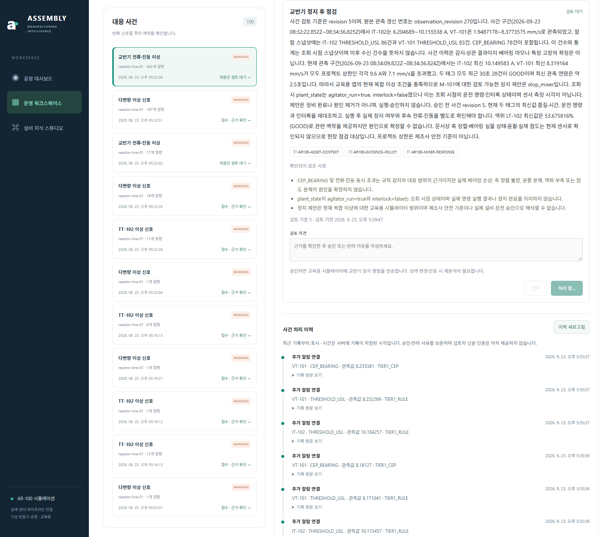
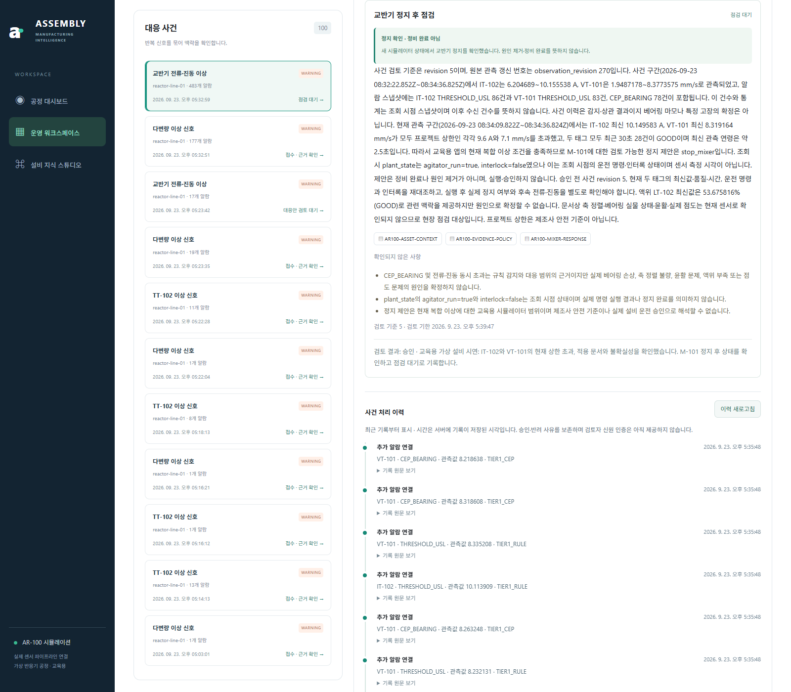

1. 교반기의 전류와 진동이 높아졌습니다
교육용 가상 설비에 이상 상황을 발생시켰습니다. 센서값을 Flink가 분석하고 Kafka 알람을 통해 사건이 등록됩니다. FUXA에서 교반기의 전류 IT-102와 진동 VT-101을 봅니다.

2. Agent가 알람·설명서·센서값을 확인했습니다
사람이 ‘대응안 작성’을 눌러 시작했습니다. PostgreSQL의 알람, Neo4j의 설비 관계와 문서, InfluxDB와 시뮬레이터의 관측값을 조회한 도구 이름·완료 상태·시간이 표시됩니다.

3. ‘교반기 정지 후 점검’ 검토 카드가 나왔습니다
현재 전류·진동이 프로젝트 상한을 넘는다는 근거, 적용 문서 3개, 확정하지 못한 원인이 나옵니다. 검토 의견을 입력한 뒤 ‘승인하고 진행’을 누릅니다.

4. 승인 후 조치가 진행됐습니다
승인 버튼을 누른 직후의 화면입니다. 서버가 실행 조건을 다시 검사하고 Modbus로 가상 교반기에 정지 명령을 보냅니다. 이 화면의 ‘처리 중’만으로 성공을 판단하지 않고 다음 결과를 확인합니다.

5. 정지를 확인하고 결과를 남겼습니다
업무 화면에 ‘정지 확인 · 정비 완료 아님’, 사건 상태에 ‘점검 대기’가 표시됐습니다. 원인까지 고쳤다는 뜻은 아닙니다.

FUXA에서도 교반기 정지를 확인합니다
오른쪽 M-101 운전값이 0, 교반기 전류는 0.02 A, 진동은 0.03 mm/s로 표시됩니다. 같은 시연의 조치 이후 화면입니다.
실행 근거
실제 저장 결과: stop_verified. 상태 seq 13544에서 agitator_run=true, seq 13545에서 false를 확인했습니다. 명령은 Modbus, 실행 후 상태 확인은 HTTP /state입니다. 캡처 후 주입한 이상을 해제했으며 교반기는 정지 상태로 두었습니다. API 실행 기록